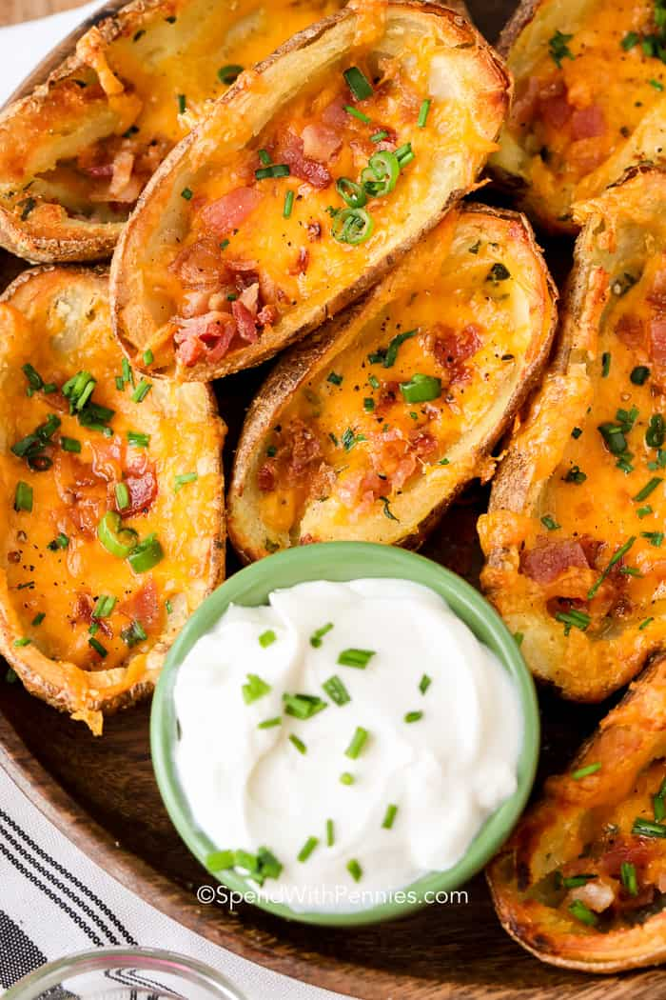

Crispy Potato Skins

Crispy potato skins you are going to love
Oh so crispy!
- Small Russet Potatoes
- Shredded Cheese
- Bacon bits
- Chives
Directions
- Choose smaller potates to make bite sized snack.
- Use russet potatoes and bake potatoes in oven until tender.
- Cool completely before cutting.
- Cut lenghtwise and use a spoon to scoop out the flesh.
Leave about 1/4" of potato in the shell.
- Fill the potatoes with you favorite toppings.